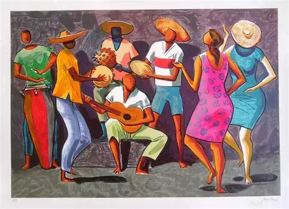
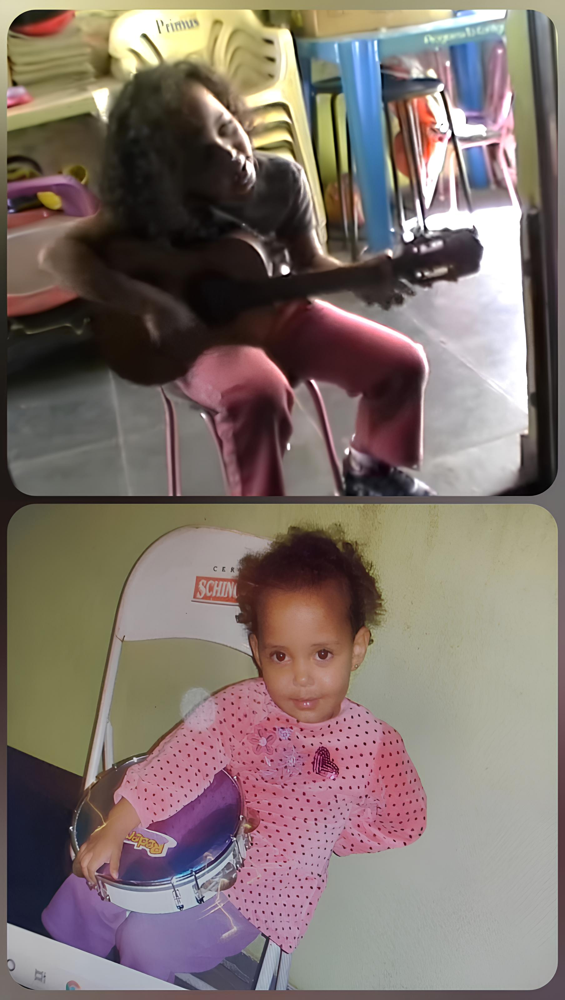
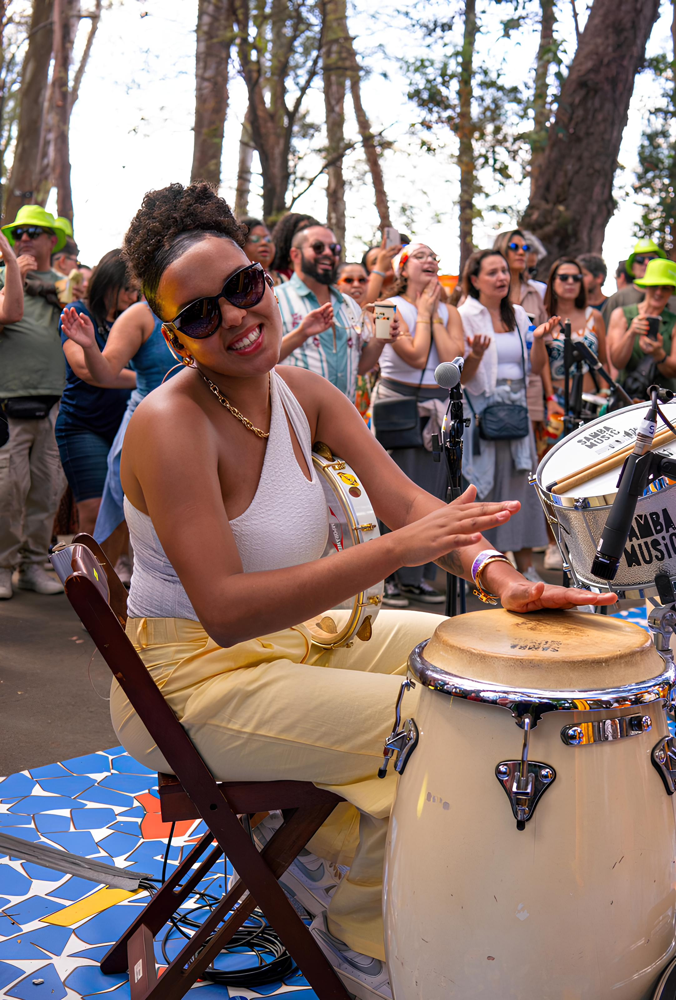
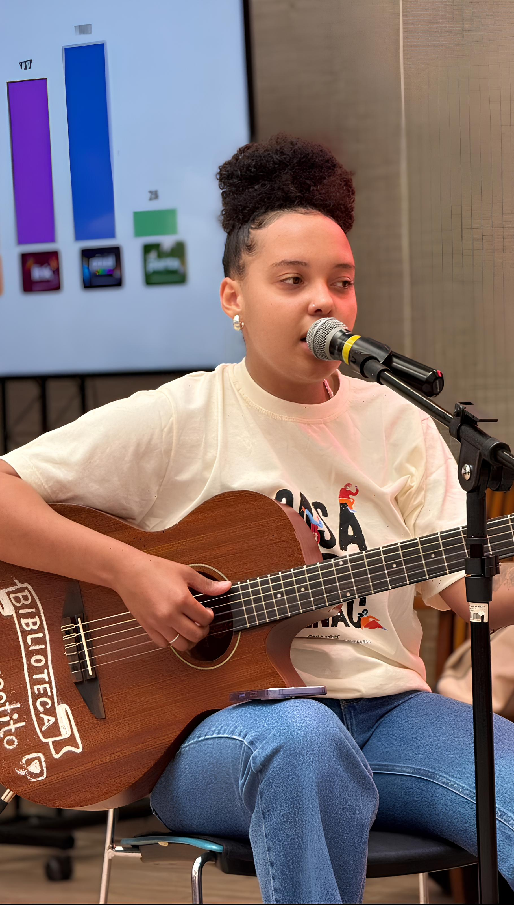
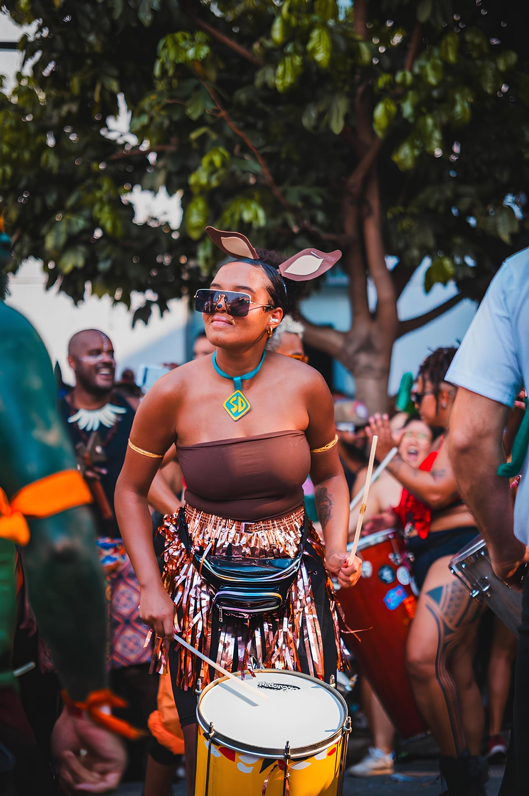
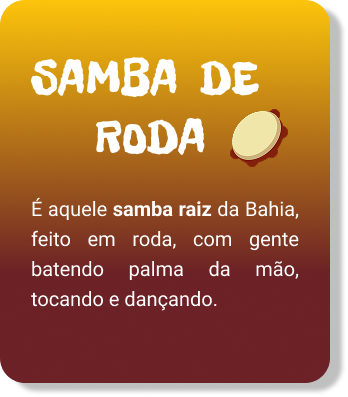
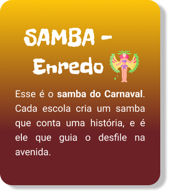
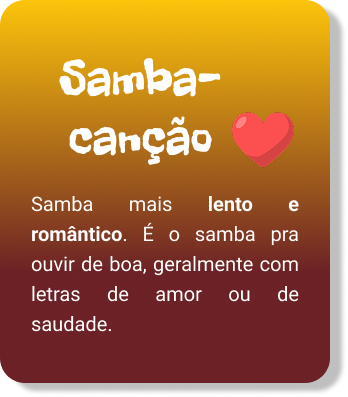
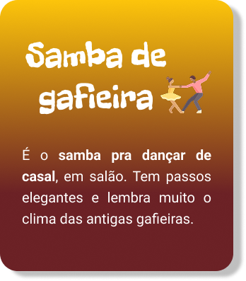
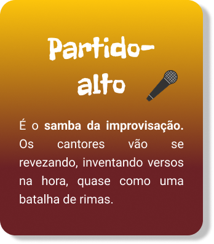

O Samba é um patrimônio cultural de extrema importância para o Brasil,
que traz identidade, mistura de ritmos e resistência.
Com Samba aprendi a importância de sempre aprender e evoluir, e através dele, descobri
que a arte tem o
poder de curar!
É a arte que tranforma dor em poesia, dificuldade em superação e é nela que econtro forças para
recomeçar.
Desde que me entendo por gente, o samba sempre esteve presente na minha vida. Cresci em meio às rodas de samba da minha família, onde cada encontro era marcado por música, alegria e união. Foi nesse ambiente que comecei a criar minhas primeiras memórias musicais e a sentir o poder que o samba tem de aproximar as pessoas.
Aos poucos, fui pegando gosto e me aventurando nos instrumentos. Aprendi de forma autodidata, observando meus familiares tocarem e repetindo cada gesto que via. Instrumentos como o cavaquinho, o pandeiro, repique de mão, tamborim e outros instrumentos se tornaram parte de mim, tocar se tornou minha brincadeira favorita. Com 14 anos, dei meu primeiro passo profissional: comecei a trabalhar com música. Desde então ele me ensinou disciplina, criatividade e, acima de tudo, a importância de manter viva uma tradição que carrega tanta história e emoção.



O carnaval é a maior festa popular do Brasil e ele tem tudo a ver com o samba, porque é o ritmo que dá vida aos desfiles e às baterias das escolas. Mais do que festa, o carnaval passa de geração em geração e mantém viva a cultura brasileira.
Eu entrei nesse mundo aos 12 anos, quando comecei na bateria mirim da Camisa Verde e Branco. Foi ali que senti de verdade a energia do carnaval. Cada ensaio era pura emoção, e cada batida mostrava que o samba não é só música é união, história e paixão.






.png)